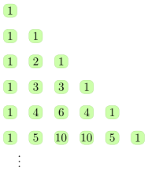
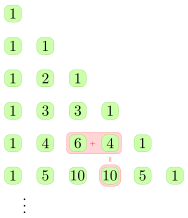
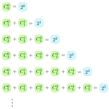
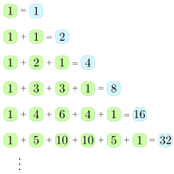
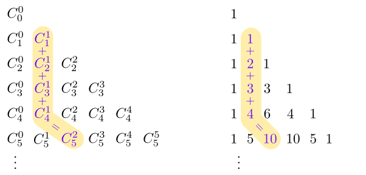
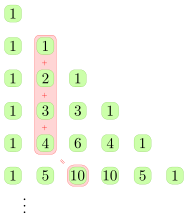
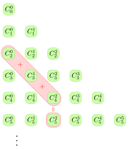
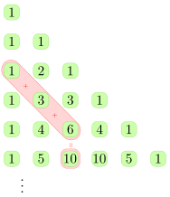

Seção 3.1 Triângulo de Pascal
Definição 3.1.1 .
O Triângulo de Pascal é um triângulo numérico infinito formado por números binomiais \(C_n^p\text{,}\) na qual, \(n\) representa a linha, e \(p\) representa a coluna, com \(n,p \geq 0\text{.}\) Abaixo temos duas representações do mesmo triângulo, com \(0\leq n \leq 5\text{.}\)
Figura 3.1.2. O Triângulo de Pascal.
Figura 3.1.3. O Triângulo de Pascal.
Tecnologia 3.1.4 .
Obtenha o Triângulo de Pascal referente ao intervalo escolhido.
Figura 3.1.5. A seguir, veremos a relação de Stifel, que afirma que o valor da soma de dois elementos consecutivos de uma linha do triângulo de Pascal é igual ao elemento que está abaixo do segundo elemento dessa soma. Veja a figura abaixo:
Figura 3.1.6. Relação de Stifel.
Figura 3.1.7. Relação de Stifel.
Teorema 3.1.8 .
(Relação de Stifel)
\begin{equation*}
C_n^p + C_n^{p+1} = C_{n+1}^{p+1}.
\end{equation*}
Demonstração.
\begin{align*}
C_n^p + C_n^{p+1}= \amp ~\frac{n!}{p!\times (n-p)!} + \frac{n!}{(p+1)!\times (n-p-1)!} \\
= \amp ~ \frac{(p+1)\times n!}{(p+1)\times p!\times (n-p)!} + \frac{(n-p)\times n!}{(n-p)\times(p+1)!\times (n-p-1)!} \\
= \amp ~ \frac{n!\times((p+1)+(n-p)) }{(n-p)!\times(p+1)!} \\
= \amp ~ \frac{n!\times(n+1) }{(n-p)!\times(p+1)!} \\
= \amp ~ \frac{(n+1)!}{(p+1)!\times (n-p)!} \\
= \amp ~ C_{n+1}^{p+1}
\end{align*}
Teorema 3.1.9 .
(Relação das Combinações Complementares)
\begin{equation*}
C_n^p = C_n^{n-p}.
\end{equation*}
Demonstração.
\begin{equation*}
C_n^p= \frac{n!}{p!\times (n-p)!} = \frac{n!}{(n-p)!\times p!} = C_n^{n-p}.
\end{equation*}
A seguir, veremos o Teorema das Linhas, que afirma que o valor da soma de todos os elementos da linha \(n\) do triângulo de Pascal é igual \(2^n\text{.}\) Veja a figura abaixo:
Figura 3.1.10. Teorema das Linhas.
Figura 3.1.11. Teorema das Linhas.
Teorema 3.1.12 .
(Teorema das Linhas)
\begin{equation*}
C_n^0 + C_n^1 +C_n^2 + \cdots + C_n^n = 2^n.
\end{equation*}
Demonstração. Observe que
\begin{equation*}
C_n^i \text{ é número de subconjuntos com}~ i ~\text{elementos, de } \{1, 2, \ldots, n\}.
\end{equation*}
Ou seja, a soma
\begin{equation*}
C_n^0 + C_n^1 +C_n^2 + \cdots + C_n^n
\end{equation*}
conta o número de todos os subconjuntos, de um conjunto com n elementos.
Essa quantidade é \(2^n\text{,}\) pois para formar um subconjunto, deve-se decidir, para cada elemento do conjunto, se ele pertencerá ou não ao subconjunto. Há dois modos de decidir o que fazer com o primeiro elemento do conjunto, 2 modos com o segundo e assim por diante. Portanto o valor da soma de uma linha do Triângulo de Pascal é
\begin{equation*}
2^n.
\end{equation*}
Exemplo 3.1.13 .
Qual o valor da soma
\begin{equation*}
S = \frac{1}{2}C_n^1 + \frac{1}{3}C_n^2 + \cdots + \frac{1}{n+1}C_n^n?
\end{equation*}
Solução
\begin{align*}
S = \amp \sum_{k=1}^n \frac{1}{k+1}C_n^k \\
= \amp \sum_{k=1}^n \frac{1}{k+1}\cdot \frac{n!}{k!(n-k)!} \\
= \amp \sum_{k=1}^n \frac{1}{k+1}\cdot \frac{n!}{k!(n-k)!}\cdot \frac{n+1}{n+1} \\
= \amp \frac{1}{n+1}\sum_{k=1}^n \frac{(n+1)!}{(k+1)!(n-k)!} \\
= \amp \frac{1}{n+1}\sum_{k=1}^n C_{n+1}^{k+1} \\
= \amp \frac{1}{n+1}\left( -C_{n+1}^0 - C_{n+1}^1 +\underbrace{C_{n+1}^0 + C_{n+1}^1 + \cdots+C_{n+1}^{n+1}}_{=2^{n+1}} \right) \\
= \amp \frac{1}{n+1}\left( 2^{n+1} - n -2 \right).
\end{align*}
Tecnologia 3.1.14 .
Vamos resolver o Exemplo 3.1.13 usando o Sage. Primeiramente note que
\begin{equation*}
S = \sum_{k=1}^n \frac{1}{k+1}C_n^k.
\end{equation*}
Definimos as variáveis \(\verb|n|\) e \(\verb|k|\text{,}\) definimos a função \(\verb|C(n,p)=binomial(n,p)|\) e usamos o método \(\verb|sum|\) com a expressão do somatório. No final do código do método \(\verb|sum|\) foi acrescentado o comando \(\verb|.show()|\) apenas para o resultado ser exibido no formato compilado pelo \(\LaTeX\text{,}\) ou seja, visualmente mais elegante.
A seguir, veremos o Teorema das Colunas, que afirma que no triângulo de Pascal, o valor da soma dos elementos da coluna \(p\text{,}\) do início até a linha \(p+n\) é igual ao elemento que está uma linha abaixo e uma coluna à direita. Veja a figura abaixo:
Figura 3.1.15. Teorema das Colunas.
Figura 3.1.16. Teorema das Colunas.
Teorema 3.1.17 .
(Teorema das Colunas)
\begin{equation*}
C_p^p + C_{p+1}^p + C_{p+2}^p + \cdots + C_{p+n}^p = C_{p+n+1}^{p+1}.
\end{equation*}
Demonstração. Vamos aplicar a relação de Stifel aos elementos da coluna \(p+1\text{:}\)
\begin{align*}
C_{p+1}^{p+1} = \amp C_p^{p+1} + C_p^p \\
C_{p+2}^{p+1} = \amp C_{p+1}^{p+1} + C_{p+1}^p \\
C_{p+3}^{p+1} = \amp C_{p+2}^{p+1} + C_{p+2}^p \\
\vdots ~~~ = \amp ~~~~~~ \vdots \\
C_{p+n}^{p+1} = \amp C_{p+n-1}^{p+1} + C_{p+n-1}^p \\
C_{p+n+1}^{p+1} = \amp C_{p+n}^{p+1} + C_{p+n}^p
\end{align*}
Somando tudo, ficamos com
\begin{equation*}
C_{p+n+1}^{p+1} = C_p^{p+1} + C_p^p + C_{p+1}^p + C_{p+2}^p +\cdots + C_{p+n-1}^p + C_{p+n}^p.
\end{equation*}
Como \(C_p^{p+1} = 0\text{,}\) obtemos o resultado:
\begin{equation*}
C_{p+n+1}^{p+1} = C_p^p + C_{p+1}^p + C_{p+2}^p +\cdots + C_{p+n-1}^p + C_{p+n}^p.
\end{equation*}
Exemplo 3.1.18 .
Qual o valor da soma
\begin{equation*}
S = 10\cdot 11 + 11\cdot 12+ \cdots + 98\cdot 99?
\end{equation*}
Solução
\begin{align*}
S = \amp \sum_{k=10}^{98} k(k+1) \\
= \amp \sum_{k=1}^{98} k(k+1) - \sum_{k=1}^9 k(k+1). \quad \quad\quad \quad\quad
\end{align*}
Observe que \(C_{k+1}^2=\displaystyle\frac{(k+1)k(k-1)!}{2!(k-1)!}=\frac{(k+1)k}{2!}\text{,}\) assim \(k(k+1)=2!C_{k+1}^2\text{.}\) Portanto,
\begin{align*}
S = \amp \sum_{k=1}^{98} 2!C_{k+1}^2 - \sum_{k=1}^9 2!C_{k+1}^2 \\
= \amp 2(C_2^2 + \cdots + C_{99}^2) - 2(C_2^2 + \cdots + C_{10}^2) \\
= \amp 2C_{100}^3 - 2C_{11}^3 \\
= \amp 323400 - 330\\
= \amp 323070
\end{align*}
Tecnologia 3.1.19 .
Vamos resolver o Exemplo 3.1.18 usando o Sage. Primeiramente note que
\begin{equation*}
S = \sum_{k=10}^{98} k(k+1).
\end{equation*}
Definimos a variável \(\verb|n|\text{,}\) usamos o método \(\verb|sum|\) com a expressão do somatório.
Exemplo 3.1.20 .
Qual o valor da soma
\begin{equation*}
S = 1^2\cdot2 + 2^2\cdot3+ 3^2\cdot4+\cdots+n^2\cdot(n+1)?
\end{equation*}
Solução Note que
\begin{align*}
S = \amp \sum_{k=1}^{n} k^2\cdot (k+1) \\
= \amp \sum_{k=1}^{n} k^3+k^2
\end{align*}
Vamos reescrever o polinômio \(k^3+k^2\) como um polinômio de grau \(3\) que envolve o produto de termos consecutivos, pois assim poderemos trocar o produto de termos consecutivos por alguma combinação da seguinte maneira:
\begin{equation*}
k\cdot(k+1)\cdot(k+2) = 3!\frac{(k+2)!}{3!(k-1)!} = 3!\cdot C_{k+2}^{3}.
\end{equation*}
Então, vamos procurar valores para \(A, B, C\) e \(D\text{,}\) para os quais, vale a igualdade
\begin{align*}
k^3+k^2 = \amp ~ Ak(k+1)(k+2) + Bk(k+1) + Ck +D \\
= \amp ~ k^3(A) + k^2(3A+B) + k(2A+B+C) +D,
\end{align*}
igualando os coeficientes, obtemos
\begin{equation*}
\begin{cases}
A = ~ 1 \\
3A+B = ~ 1 \\
2A+B+C = ~ 0 \\
D = ~ 0 \\
\end{cases}
\end{equation*}
Portanto, \(A= 1, B = -2, C=0\) e \(D=0\text{.}\) Agora, podemos terminar o cálculo da soma
\begin{align*}
S = \amp ~ \sum_{k=1}^{n} k^3+k^2 \\
= \amp ~ \sum_{k=1}^{n} k(k+1)(k+2) - 2 \sum_{k=1}^{n} k(k+1) \\
= \amp ~ 3!\sum_{k=1}^{n} C_{k+2}^3 - 2\cdot 2! \sum_{k=1}^{n} C_{k+1}^2 \\
= \amp ~ 6C_{n+3}^4 - 4C_{n+2}^3 \\
= \amp ~ \frac{3n^4+10n^3+9n^2+2n}{12}.
\end{align*}
Tecnologia 3.1.21 .
Vamos resolver o Exemplo 3.1.20 usando o Sage. Primeiramente note que
\begin{equation*}
S = \sum_{k=1}^n k^2(k+1).
\end{equation*}
Definimos as variáveis \(\verb|n|\) e \(\verb|k|\text{,}\) usamos o método \(\verb|sum|\) com a expressão do somatório. No final do código do método \(\verb|sum|\) foi acrescentado o comando \(\verb|.show()|\) apenas para o resultado ser exibido no formato compilado pelo \(\LaTeX\text{,}\) ou seja, visualmente mais elegante.
A seguir, veremos o Teorema das Diagonais, que afirma que no triângulo de Pascal, o valor da soma dos elementos de uma diagonal, começando na coluna zero e linha \(n\text{,}\) até a linha \(n+p\text{,}\) é igual ao elemento que está uma linha abaixo. Veja a figura abaixo:
Figura 3.1.22. Teorema das Diagonais.
Figura 3.1.23. Teorema das Diagonais.
Teorema 3.1.24 .
(Teorema das Diagonais)
\begin{equation*}
C_n^0 + C_{n+1}^1 + C_{n+2}^2 + \cdots + C_{n+p}^p = C_{n+p+1}^p
\end{equation*}
Demonstração. Aplicando o Teorema 3.1.9 , em cada \(C_{n+i}^i\) obtemos
\begin{align*}
C_n^0 + C_{n+1}^1 + C_{n+2}^2 + \cdots + C_{n+p}^p = \amp ~ C_{n}^n+C_{n+1}^n+C_{n+2}^n+\cdots+C_{n+p}^n\\
= \amp~C_{n+p+1}^{n+1}\quad (\text{pelo } \knowl{./knowl/teo-colunas.html}{\text{Teorema 3.1.17}})\\
= \amp~C_{n+p+1}^{p} \quad(\text{pelo } \knowl{./knowl/teo-reolacoes-complementares.html}{\text{Teorema 3.1.9}}).
\end{align*}
O que mostra o resultado.
Teorema 3.1.25 .
\begin{equation*}
\text{a) Se } p\lt \frac{n-1}{2}, \text{ então } C_n^p\lt C_n^{p+1}.
\end{equation*}
\begin{equation*}
\text{b) Se } p> \frac{n-1}{2}, \text{ então } C_n^p>C_n^{p+1}.
\end{equation*}
Demonstração. Vamos analisar a diferença \(C_n^{p+1}-C_n^p\text{:}\)
\begin{align*}
C_n^{p+1}-C_n^p = \amp ~ \frac{n!}{(p+1)!(n-p-1)!} - \frac{n!}{p!(n-p)!} \\
= \amp ~ \frac{n!}{(p+1) p!(n-p-1)!} - \frac{n!}{p!(n-p)(n-p-1)!} \\
= \amp ~ \frac{n!(n-p) - n!(p+1)}{(p+1)!(n-p)!} \\
= \amp ~ \frac{n!(n-2p-1)}{(p+1)! (n-p)!}
\end{align*}
Oberve que \(n!, (p+1)!\) e \((n-p)!\) são positivos, portanto o sinal de \(C_n^{p+1}-C_n^p\text{,}\) será determinado pelo sinal de
\begin{equation*}
n-2p-1.
\end{equation*}
Logo,
\begin{equation*}
\text{Se } n-2p-1>0, \text{ então } p\lt\frac{n-1}{2} \Rightarrow C_n^{p+1}-C_n^{p}>0 \Rightarrow C_n^{p}\lt C_n^{p+1}.
\end{equation*}
\begin{equation*}
\text{Se } n-2p-1\lt 0, \text{ então } p>\frac{n-1}{2} \Rightarrow C_n^{p+1}-C_n^{p}\lt 0 \Rightarrow C_n^{p}>C_n^{p+1}.
\end{equation*}
Exercícios 3.1.1 Exercícios
1. Tem-se \(n\) comprimidos de substâncias distintas, solúveis em água e incapazes de reagir entre si. Quantas soluções distintas podem ser obtidas dissolven-se um ou mais desses comprimidos em um copo com água?
2. Calcule o valor de
\(\displaystyle \sum_{k=0}^nkC_n^k.\)
\(\displaystyle \sum_{k=0}^nk^2C_n^k.\)
\(\displaystyle \sum_{k=0}^nk^3C_n^k.\)
Resposta
\(n2^{n - 1}\text{.}\)
\({\left(n^{2} + n\right)} 2^{n - 2}\text{.}\)
\({\left(n^{3} + 3 \, n^{2}\right)} 2^{n - 3}\text{.}\)
Solução
\begin{align*}
\sum_{k=1}^nkC_n^k = \amp~\sum_{k=1}^n k\cdot \frac{n!}{k(k-1)!(n-k)!}\\
=\amp~ \sum_{k=1}^n n\cdot \frac{(n-1)!}{(k-1)!(n-k)!}\\
=\amp~ n\sum_{k=1}^nC_{n-1}^{k-1}\\
=\amp~ n2^{n-1}
\end{align*}
\begin{align*}
\sum_{k=1}^nk^2C_n^k = \amp~ \sum_{k=1}^n k^2\cdot \frac{n!}{k(k-1)!(n-k)!}\\
=\amp~ n\sum_{k=1}^n kC_{n-1}^{k-1}. \quad\quad\quad\quad\quad\quad\quad\quad\quad\quad\quad
\end{align*}
Definindo \(k=p+1\text{,}\) obtemos
\begin{align*}
\sum_{k=1}^nk^2C_n^k = \amp~ n\sum_{p=0}^{n-1}(p+1)C_{n-1}^p\\
=\amp~ n \sum_{p=0}^{n-1}pC_{n-1}^p + n\underbrace{\sum_{p=0}^{n-1}C_{n-1}^p}_{=2^{n-1}} \\
=\amp~ n\sum_{p=1}^{n-1} p\cdot \frac{(n-1)!}{p(p-1)!(n-p-1)!}+n2^{n-1}\\
=\amp~ n(n-1)\sum_{p=1}^{n-1}C_{n-2}^{p-1}+ n2^{n-1}\\
=\amp~ n(n-1)2^{n-2}+n2^{n-1}\\
=\amp~ {\left(n^{2} + n\right)} 2^{n - 2}.
\end{align*}
\begin{align*}
\sum_{k=1}^n k^3C_n^k =\amp~ \sum_{k=1}^nk^2k\cdot \frac{n!}{k(k-1)!(n-k)!} \\
=\amp~ n\sum_{k=1}^n k^2C_{n-1}^{k-1}.\quad\quad\quad\quad\quad\quad\quad\quad\quad\quad\quad
\end{align*}
Definindo \(k=p+1\text{,}\) obtemos
\begin{align*}
\sum_{k=1}^nk^3C_n^k = \amp~ n\sum_{p=0}^{n-1}(p+1)^2C_{n-1}^{k-1}\\
=\amp~ n\sum_{p=0}^{n-1}(p^2+2p+1)C_{n-1}^p\\
=\amp~ n\underbrace{\sum_{p=0}^{n-1}p^2C_{n-1}^p}_{=(n-1)n2^{n-3}} +2n\underbrace{\sum_{p=0}^{n-1}pC_{n-1}^p}_{=(n-1)2^{n-2}}+n\underbrace{\sum_{p=0}^{n-1}C_{n-1}^p}_{=2^{n-1}}\\
=\amp~(n^3+3n^2)2^{n-3}.
\end{align*}
3. Calcule o valor da soma
\begin{equation*}
S = 20\cdot21 + 21\cdot 22 +\cdots + 130\cdot 131.
\end{equation*}
4. Calcule o valor de
\begin{equation*}
S = \sum_{k=1}^{n}k(3k+1).
\end{equation*}
5. Calcule o valor de
\begin{equation*}
\sum_{k=0}^p kC_{n+k}^{k+1}.
\end{equation*}
Resposta \(\frac{(np-1)}{n+1}\cdot C_{n+p+1}^{p+1}+1\)
Solução
\begin{gather*}
\sum_{k=0}^p kC_{n+k}^{k+1} = \underbrace{\sum_{k=0}^p (k+1)C_{n+k}^{k+1}}_{S_1}-\underbrace{\sum_{k=0}^pC_{n+k}^{k+1}}_{S_2}.
\end{gather*}
Vamos calcular \(S_1\) e \(S_2\) separadamente.
\begin{align*}
S_1 = \amp~\sum_{k=0}^p(k+1)\cdot\frac{(n+k)!}{(k+1)!(n-1)!}\\
=\amp~ \sum_{k=0}^p \frac{(n+k)!}{k!(n-1)!}\cdot \frac{n}{n}\\
=\amp~n\sum_{k=0}^p \frac{(n+k)!}{k!n!}\\
=\amp~n\sum_{k=0}^pC_{n+k}^k\\
=\amp~n(C_n^0+\cdots+C_{n+p}^p)\\
=\amp~nC_{n+p+1}^p~~(\text{Pelo Teo. das Diagonais}).
\end{align*}
Para usar o Teorema das Diagonais no cálculo de \(S_2\text{,}\) precisamos somar e subtrair \(C_{n-1}^0\text{.}\)
\begin{align*}
S_2=\amp~(C_n^1+C_{n+1}^2+\cdots+C_{n+p}^{p+1})\\
=\amp~(C_{n-1}^0+C_n^1+\cdots+C_{n+p}^{p+1})-C_{n-1}^0\\
=\amp~ C_{n+p+1}^{p+1}-1.
\end{align*}
Portanto,
\begin{align*}
\sum_{k=0}^p kC_{n+k}^{k+1} =\amp~nC_{n+p+1}^p-C_{n+p+1}^{p+1}+1.\\
=\amp~\frac{(np-1)}{n+1}\cdot C_{n+p+1}^{p+1}+1.
\end{align*}
6. Calcule
\begin{equation*}
CR_n^0 + CR_n^1+\cdots+ CR_n^p.
\end{equation*}